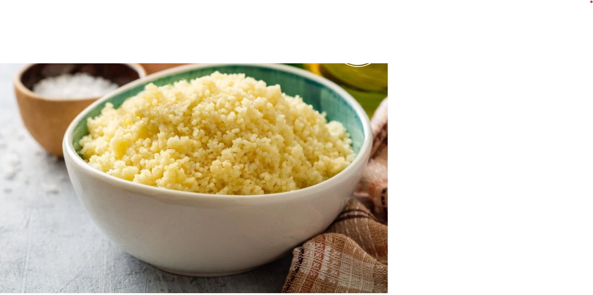
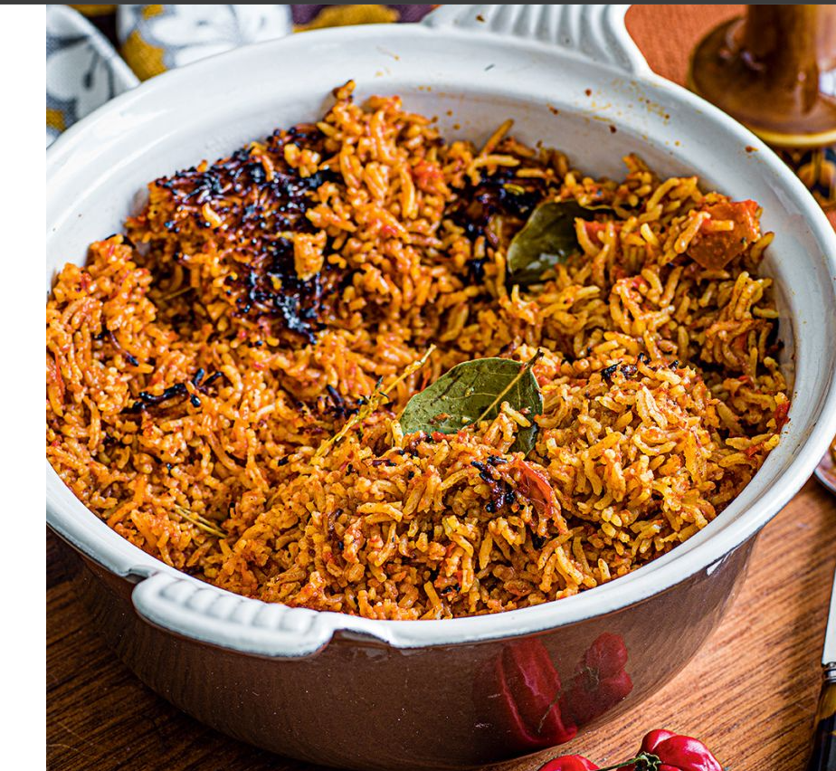
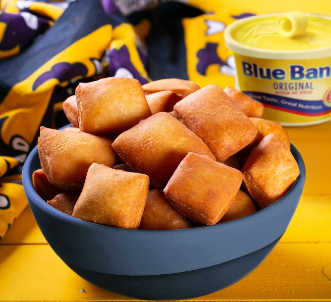
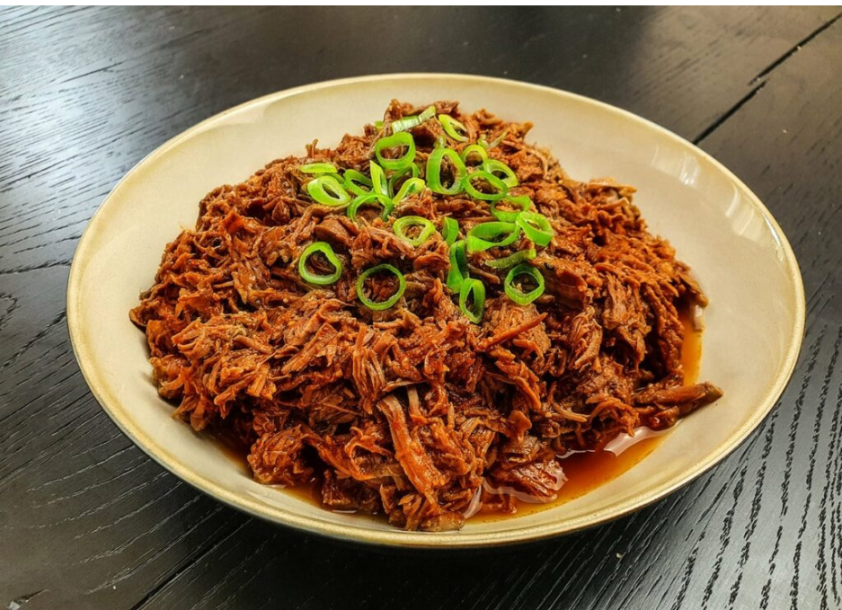

Moon Bite Cuisine
Discover the rich and diverse flavors of African traditional cuisine
Explore RegionsWELCOME
Moon Bite Cuisine is a platform dedicated to showcasing the richness of African traditional food. We explore dishes from all four regions of Africa, sharing culture, history, and flavor with the world.
Explore African Regions

North Africa
Made from steamed semolina grains, usually served with vegetables or meat.

West Africa
A flavorful rice dish cooked with tomatoes and spices.

East Africa
It is a soft, slightly fried dough, often eaten with tea.

Southern Africa
Slow-cooked shredded beef, a national dish of Botswana.